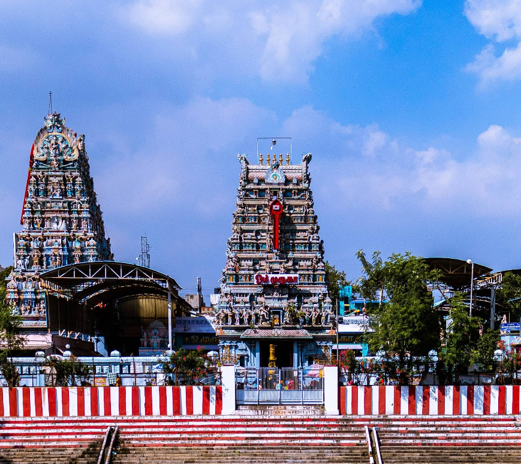

Vadapalani Murugan Temple, a famous shrine in Chennai dedicated to Lord Murugan, began as a small hut where devotee Annasamy Naicker received divine visions in the late 19th century, leading to a grand temple known for healing and granting wishes, particularly marriages, with its main deity resembling the Palani idol and attracting thousands who seek blessings for health, jobs, and matrimony, making it a significant spiritual hub in Tamil Nadu.
Origin: Started as a hut in the late 1800s by Annasamy Naicker, who experienced divine arulvakku (divine utterances).
Deity: Lord Murugan (Kartikeya), with the main idol mirroring the Palani temple's deity, known for wearing footwear to show readiness to help.
Significance: Famous for answering prayers for curing diseases, securing jobs, and solemnizing marriages, with thousands of weddings held annually.
Architecture: Features a prominent rajagopuram (tower) and traditional South Indian architecture, growing from its humble beginnings into a large temple complex.
Location: In Vadapalani, easily accessible by metro (Vadapalani station) and other transport, serving as a "North Palani" for those unable to visit the original.